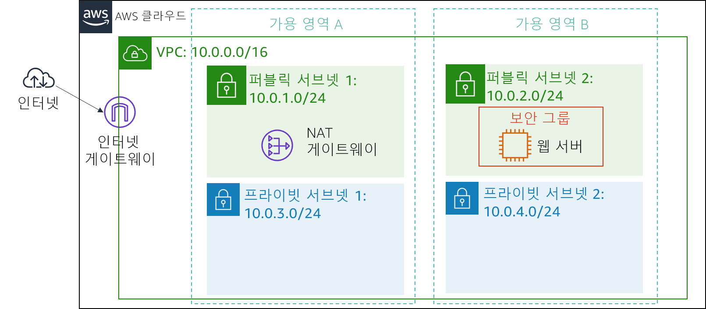
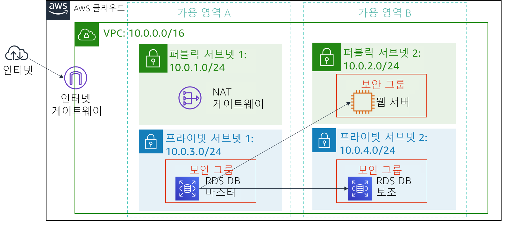

버전 4.6.6(TESS2)
이 실습은 AWS 관리형 데이터베이스 인스턴스를 활용하여 관계형 데이터베이스 요구 사항을 해결하는 개념을 보강하도록 설계되었습니다.
Amazon Relational Database Service(Amazon RDS)를 사용하면 클라우드에서 관계형 데이터베이스를 더욱 간편하게 설정, 운영 및 확장할 수 있습니다. 시간 소모적인 데이터베이스 관리 작업을 관리하는 한편, 효율적인 비용으로 크기 조정이 가능한 용량을 제공하므로 고객은 애플리케이션과 비즈니스에 집중할 수 있습니다. Amazon RDS에서는 Amazon Aurora, Oracle, Microsoft SQL Server, PostgreSQL, MySQL, MariaDB와 같은 익숙한 6개 데이터베이스 엔진 중에서 선택할 수 있습니다.
목표
본 실습을 완료하면 다음을 할 수 있습니다.
소요 시간
이 실습은 완료까지 약 30분이 소요됩니다.
시나리오
다음 인프라로 시작합니다. 
이 실습을 마친 후 인프라는 다음과 같습니다.

지침의 맨 위에서 Start Lab을 클릭하여 실습을 시작합니다.
Start Lab 패널이 열리고 실습 상태가 표시됩니다.
“Lab status: ready” 메시지가 표시되면 X를 클릭하여 Start Lab 패널을 닫습니다.
지침의 맨 위에서 AWS를 클릭합니다.
그러면 새 브라우저 탭에서 AWS Management Console이 열립니다. 시스템에서 자동으로 로그인합니다.
팁: 새 브라우저 탭이 열리지 않는 경우 일반적으로 브라우저에서 팝업 창을 열 수 없음을 나타내는 배너 또는 아이콘이 브라우저 상단에 표시됩니다. 배너 또는 아이콘을 클릭하고 Allow pop ups를 선택합니다.
이러한 지침이 나란히 표시되도록 AWS Management Console 탭을 정렬합니다. 두 브라우저 탭이 동시에 표시되어 실습 단계를 보다 쉽게 수행할 수 있게 됩니다.
이 과제에서는 RDS DB 인스턴스에 대한 웹 서버 액세스를 허용하는 보안 그룹을 생성합니다. 이 보안 그룹은 데이터베이스 인스턴스를 시작할 때 사용됩니다.
AWS Management Console의 Services 메뉴에서 VPC를 클릭합니다.
왼쪽 탐색 창에서 Security Groups을 클릭합니다.
Create security group을 클릭하고 다음을 구성합니다.
DB Security GroupPermit access from Web Security Group이제 보안 그룹에 인바운드 데이터베이스 요청을 허용하는 규칙을 추가합니다.
Inbound rules 창에서 Add rule을 선택합니다.
현재 보안 그룹에는 규칙이 없습니다. Web Security Group의 액세스를 허용하는 규칙을 추가합니다.
다음 설정을 구성합니다.
sg를 입력하고 Web Security Group을 선택합니다.Web Security Group에 연결된 모든 EC2 인스턴스의 포트 3306 기반 인바운드 트래픽을 허용하는 데이터베이스 보안 그룹이 구성됩니다.
Create security group을 선택합니다.
Amazon RDS 데이터베이스를 시작할 때 이 보안 그룹을 사용합니다.
이 과제에서는 데이터베이스에 사용할 수 있는 서브넷을 RDS에 알리는 데 사용되는 DB 서브넷 그룹을 생성합니다. 각 DB 서브넷 그룹의 서브넷은 2개 이상의 가용 영역에 있어야 합니다.
탐색 창이 보이지 않으면 왼쪽 상단의 메뉴 아이콘을 클릭합니다.
DB-Subnet-GroupDB 서브넷 그룹이제 이러한 서브넷이 [선택한 서브넷] 테이블에 표시됩니다.
다음 과제에서 데이터베이스를 생성할 때 이 DB 서브넷 그룹을 사용합니다.
이 과제에서는 다중 AZ Amazon RDS for MySQL 데이터베이스 인스턴스를 구성하고 시작합니다.
Amazon RDS 다중 AZ 배포는 DB(데이터베이스) 인스턴스의 가용성 및 내구성을 높여주므로 프로덕션 데이터베이스 워크로드에 적합합니다. 다중 AZ DB 인스턴스를 프로비저닝하는 경우 Amazon RDS는 기본 DB 인스턴스를 자동으로 생성하고, 다른 AZ(가용 영역)에 있는 대기 인스턴스에 데이터를 동기식으로 복제합니다.
화면 상단에 Switch to the new database creation flow가 표시되면.
lab-dbmasterlab-passwordlab-passwordlab이렇게 하면 백업이 비활성화됩니다. 이는 일반적으로 권장되지 않지만 이 실습에서는 데이터베이스 빠르게 배포하기 위해 이러한 설정을 사용합니다.
이제 데이터베이스가 시작됩니다.
"not authorized to perform: iam:CreateRole"이라는 오류가 표시되는 경우 이전 단계에서 Enable Enhanced monitoring을 선택 취소했는지 확인하십시오.
이제 데이터베이스를 사용할 수 있을 때까지 약 4분 동안 기다려야 합니다. 이 배포 프로세스는 2개의 다른 가용 영역에 데이터베이스를 배포합니다.
기다리는 동안 Amazon RDS FAQ를 검토하거나 잠시 쉬는 시간을 가지십시오.
이 필드는 다음과 유사합니다. lab-db.cggq8lhnxvnv.us-west-2.rds.amazonaws.com
이 과제에서는 웹 서버에서 실행 중인 웹 애플리케이션을 열고 데이터베이스를 사용하도록 구성합니다.
EC2 인스턴스에 대한 정보를 표시하는 웹 애플리케이션이 나타납니다.
이제 데이터베이스에 연결하도록 애플리케이션을 구성합니다.
labmainlab-password애플리케이션이 데이터베이스에 정보를 복사하는 명령을 실행 중임을 나타내는 메시지가 나타납니다. 몇 초 후 애플리케이션이 Address Book을 표시합니다.
Address Book 애플리케이션은 RDS 데이터베이스에 저장된 정보를 사용하고 있습니다.
데이터가 데이터베이스에 유지되고 두 번째 가용 영역에 자동으로 복제됩니다.
축하합니다! 실습을 마쳤습니다.
"DELETE has been initiated... You may close this message box now"라는 내용의 패널이 표시됩니다.
피드백 또는 제안 사항이 있거나 수정이 필요한 내용이 있는 경우 aws-course-feedback@amazon.com으로 이메일을 보내 주십시오.
Bootstrap v3.3.5 - http://getbootstrap.com/
MIT 라이선스(MIT)
Copyright (c) 2011-2016 Twitter, Inc.
사용, 복사, 수정, 병합할 수 있는 권한을 포함하되 이에 국한되지 않고 소프트웨어를 취급하기 위해 이 소프트웨어 및 관련 문서 파일(이하 "소프트웨어")의 사본을 얻는 모든 사람에게 사용 권한이 무료로 부여되며 다음 조건에 따라 소프트웨어의 사본을 게시, 배포, 재라이센스 및/또는 판매할 수 있고 소프트웨어를 제공받는 사람에게 허용할 수 있습니다.
위의 저작권 고지 및 이 허가 고지는 소프트웨어의 모든 사본 또는 상당 부분에 포함되어야 합니다.
소프트웨어는 상품성, 특정 목적에의 적합성 및 비침해에 대한 보증을 포함하지만 이에 국한되지 않고 묵시적이든 명시적이든 어떠한 종류의 보증 없이 "있는 그대로" 제공됩니다. 저자 또는 저작권 보유자는 어떠한 경우에도 소프트웨어 또는 소프트웨어의 기타 사용과 관련하여 발생했거나 계약 위반, 기타로 인해 발생하는 청구 또는 기타 책임에 대해 책임을 지지 않습니다.